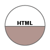
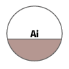
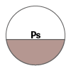
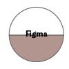
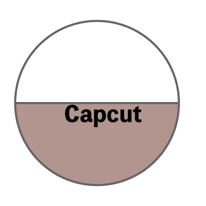
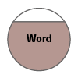
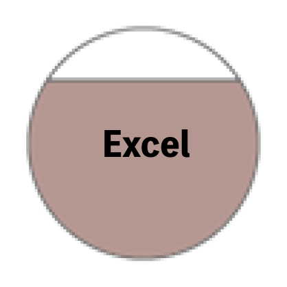
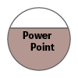

PORTFOLIO
SKILL

HTML ・CSS
基本構造の理解から、スマートフォン・PCの双方に対応したレスポンシブコーディングまで対応可能です。


Illustrator ・Photoshop
バナー制作や写真の切り抜き、色調補正・レタッチなどの画像加工が可能です。

Figma
Webサイトのデザインカンプ制作や、レイアウト・配色・文字サイズなどのデザイン設計が可能です。プロトタイプを使用した画面遷移の確認や、Webページのデザイン制作にも取り組んでいます。

Capcut
動画のカット編集やテロップ・BGMの追加、エフェクトなど、基本的な動画編集が可能です。SNSやWebで使用する短尺動画の制作にも取り組んでいます。

Word
前職にて社内報告書や業務マニュアルの作成経験があり、レイアウトを整えた見やすい文書作成が可能です。

Excel
売上データの入力・集計をはじめ、各種関数を用いたデータ抽出や、結果を視覚的に伝えるグラフ化・表作成が可能です。

PowerPoint
既存フォーマットに沿った資料修正に加え、社内会議用の分かりやすいプレゼン資料を構成から作成できます。
ABOUT
とりやま かなです。
海外ドラマが大好きな、3人のこどもを育てるははです。
現在は職業訓練校でwebデザインやコーディングを学びながら、デザインからコーディングまで一貫して制作できるwebデザイナーを目指しています。
デザインを考えていると、「もっと見やすくできるかな」、「もっと伝わるかな」と何度も試行錯誤してしまうタイプです。時間はかかっても納得できるまで向き合い、一つひとつ丁寧に仕上げることを大切にしています。
”人の想いをくみとり、カタチにしていく”をモットーに、見るひとの心に残るデザインを目指して日々勉強中です。
まだまだ学ぶことはたくさんありますが、新しいことにも前向きに挑戦しながら、少しずつできることを増やしていきます。